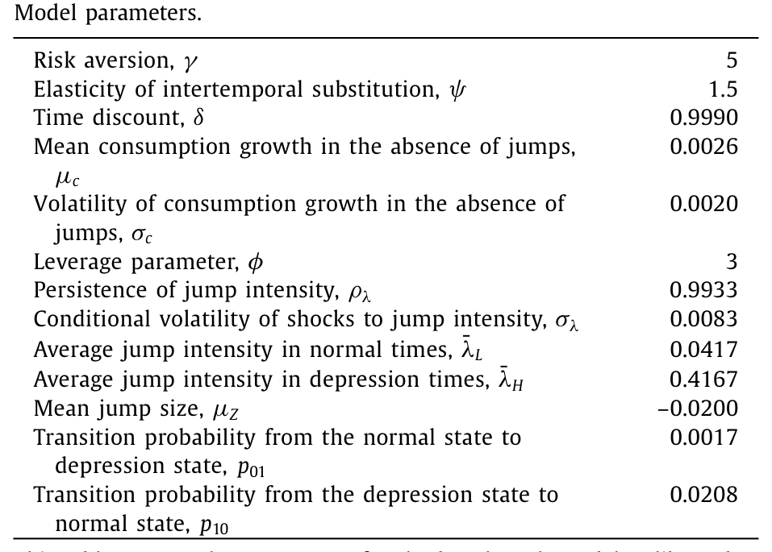
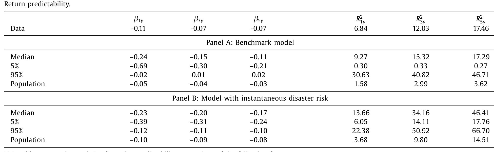
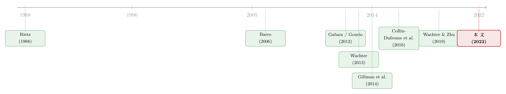

投资者还没回过神，灾难已经走完了一半
本文读的是 Ghaderi, Kilic & Seo (2022, JFE)：传统的「罕见灾难」模型假设灾难是一瞬间砸下来的暴跌，可历史上的股灾平均要拖三年才走完。作者给灾难加上一层信息摩擦——投资者分不清眼下这次下行只是「轻微的、暂时的」，还是「一场会持续好几年的大萧条」的开端。于是贝叶斯学习让股价对持续的消费下滑「慢半拍」地反应，恰好把 VIX、方差风险溢价、以及那个让人头疼的「带看跌保护组合」的溢价一并讲通了。
1 引言：一份「最多亏 15%」的保险，凭什么收着和大盘一样的保费？
先从一个让灾难风险模型很尴尬的事实讲起。
Welch（2016）做了一件很朴素的事：他买入一个月期、行权价为标的 85% 的看跌期权（put），滚动持有，给一个股票组合上「保险」。这样一个 带看跌保护的组合（put-protected portfolio） 有一个数学上无可辩驳的性质——它在任何一个月里最多只能亏 15%。因为一旦大盘单月跌穿 15%，那张 85% moneyness 的 put 就开始赔付，把你的损失死死摁在 15% 这条线上。
那么问题来了。如果股权溢价（equity premium）的来源真的是「罕见灾难」——也就是市场会偶尔在一瞬间暴跌 50%、60%——那么这张 put 应该非常值钱：它正好替你挡掉了灾难那一刀。换句话说，把灾难风险对冲掉之后，这个组合就不该再赚到什么风险溢价了。
可 Welch 发现，事实不是这样。这个「最多亏 15%」的组合，居然还在赚一个接近整个大盘的溢价。Cochrane（2017）也顺着这条线提出质疑：如果灾难是瞬时的暴跌，那短期看跌期权就该把溢价吸干，为什么没有？
这看上去像是一记直击灾难风险模型要害的重拳。但作者要论证的，恰恰是——这一拳打错了地方。
2 真正的问题，不是灾难本身，而是灾难「怎么走」
作者请出了一张图，讲了一个很有说服力的反例：大萧条（Great Depression）。
从 1929 年 9 月到 1932 年 6 月，CRSP 市值加权组合累计跌掉了 86%——这毫无疑问是一场灾难。但如果你逐月去看，会发现单月跌幅超过 15% 的月份寥寥无几。灾难不是一刀砍下来的，它是被许多个「跌 5%、跌 8%、跌 10%」的月份，一点一点拖出来的。
于是那张「最多亏 15%」的 put 保险就失效了。因为每个月的跌幅都没穿过 15% 这条线，put 几乎从不赔付，你只是白白滚动地交着保费。作者算出来：在大萧条期间滚动持有这个组合，即便忽略买 put 的成本，累计也要亏 -80%。这和「灾难是瞬时暴跌」假设下那个漂亮的「最多亏 15%」，形成了刺眼的对比。
这里是全文的「题眼」：put-protected 组合赚到溢价，不是因为灾难机制错了，而是因为传统模型把灾难画成了「瞬时一跌」。真实的灾难在股市里是缓慢展开（slowly unfolding）的——Barro & Ursúa（2017）记录到，股市灾难的平均持续时间约为三年，和宏观灾难一样漫长。一个把这种「慢」如实画出来的模型，才能同时解释正常时期和灾难时期的资产价格。
接着，一个自然的问题是：为什么传统模型画不出这种「慢」？
哪怕你像 Gourio（2012）、Nakamura et al.（2013）那样，引入一个「负增长、低概率、但很持久」的灾难 regime，让消费慢慢往下走——股市还是会在经济一踏进灾难 regime 的那一刻，就瞬间反应完毕。原因在于价格是前瞻的（forward looking）：投资者一旦知道自己进了灾难状态，就立刻把低增长预期打进价格，造成一次性的大跳水。
所以，要让股市也「慢慢跌」，缺的不是更持久的消费过程，而是——投资者不知道自己已经进了灾难。这就是信息摩擦登场的地方。
3 模型：把「分不清」写进信念
作者的代表性投资者拥有 Epstein-Zin（1989）/ Weil（1989）的递归偏好（recursive preferences），随机贴现因子（stochastic discount factor, SDF）为
$$ M_{t+1} = \exp\!\left(\theta \log\delta - \frac{\theta}{\psi}\,\Delta c_{t+1} + (\theta-1)\, r_{c,t+1}\right), \qquad \theta = \frac{1-\gamma}{1-1/\psi}. $$
其中 \(\delta\) 是时间偏好率，\(\psi\) 是跨期替代弹性（EIS），\(\gamma\) 是相对风险厌恶。这一块是标准件，真正的新意在消费过程和信念上。
消费过程。 对数消费增长被写成一个常数漂移、一个 i.i.d. 正态冲击，加上一个复合泊松跳（compound Poisson jump）：
$$ \Delta c_{t+1} = \mu_c + \sigma_c\, \varepsilon^{c}_{t+1} + J_{t+1}, \qquad J_{t+1} = \sum_{j=1}^{N_{t+1}} Z_j, \qquad \varepsilon^{c}_{t+1} \overset{i.i.d.}{\sim} N(0,1). $$
\(N_{t+1}\) 是一个泊松计数，其时变强度（intensity）为 \(\lambda_t\)。这里有一个关键的重新诠释：在 Wachter（2013）那类模型里，\(\lambda_t\) 被叫做「灾难风险」，校准得极小（灾难极罕见）、单跳幅度 \(Z_j\) 极大（一跳就是一场灾难）。本文反过来，把 \(\lambda_t\) 解释成 崩盘风险（crash risk）——更频繁、但单跳小得多的负向冲击。一场真正的消费灾难，是这些小跳在 depression regime 里累积出来的，而不是一跳砸出来的。
跳跃强度的双层结构。 \(\lambda_t\) 本身是可观测的，服从一个均值回复的（离散化）平方根过程：
$$ \lambda_{t+1} = (1-\rho_\lambda)\,\bar\lambda_{t+1} + \rho_\lambda\, \lambda_t + \sigma_\lambda \sqrt{\lambda_t}\,\varepsilon^{\lambda}_{t+1}, \qquad \varepsilon^{\lambda}_{t+1} \overset{i.i.d.}{\sim} N(0,1). $$
但它回复的长期均值 \(\bar\lambda_{t+1}\) 不可观测。这个长期均值在「正常」状态取低值 \(\bar\lambda_L\)、在「萧条」状态取高值 \(\bar\lambda_H\)，由一个在 0/1 之间来回切换的马尔可夫状态 \(s_{t+1}\) 决定：
$$ \bar\lambda_{t+1} = (1-s_{t+1})\,\bar\lambda_L + s_{t+1}\,\bar\lambda_H, \qquad p_{ss'} = P(s_{t+1}=s' \mid s_t = s). $$
这就是全模型的「分不清」之所在：投资者能看到当下的跳跃强度 \(\lambda_t\) 高了，却不知道这个高是哪来的——是一个暂时性冲击 \(\varepsilon^\lambda_{t+1}\) 把它顶了上去（很快会回落），还是经济已经悄悄切到了 depression 状态、\(\bar\lambda\) 已经永久性地抬高了。
3.1 信念更新：全文最该看懂的一步
于是投资者只能用贝叶斯学习（Bayesian learning）去猜自己身处哪个状态。定义当期信念为「现在处于萧条状态的后验概率」：
$$ \pi_t \equiv \pi_{t|t} = P(s_t = 1 \mid \lambda_{-\infty:t}). $$
注意：投资者并不直接去看消费来学习。因为在 \(t\) 时刻 \(\lambda_t\) 已知，而 \(\lambda_t\) 已经完全决定了下一期消费增长的条件分布——这一建模选择呼应了「股市灾难先于消费灾难」的实证观察（Barro & Ursúa, 2017; Muir, 2017）。投资者真正用来学习的，是跳跃强度本身的演化。
当新的 \(\lambda_{t+1}\) 被观测到，信念按贝叶斯法则更新为：
第一项（似然比）是「这次 \(\lambda\) 的跳动，更像正常状态还是萧条状态」；第二项是「在看到新数据之前，仅凭状态转移规律，我本来认为自己在哪个状态」。两者一乘再取倒数，就是更新后的萧条概率 \(\pi_{t+1}\)。
作者把似然比写成了一个干净的闭式。两个状态下 \(\lambda_{t+1}\) 都服从正态、且方差同为 \(\sigma_\lambda^2 \lambda_t\)，只是均值不同，于是似然比是一个指数函数：
$$ \frac{P(\lambda_{t+1}\mid s_{t+1}=0,\, \lambda_{-\infty:t})}{P(\lambda_{t+1}\mid s_{t+1}=1,\, \lambda_{-\infty:t})} = \exp\!\left( -\frac{(1-\rho_\lambda)(\bar\lambda_H - \bar\lambda_L)}{\sigma_\lambda^2 \lambda_t}\left[\lambda_{t+1} - \rho_\lambda \lambda_t - \frac{1-\rho_\lambda}{2}(\bar\lambda_H + \bar\lambda_L)\right]\right). $$
这个式子里藏着学习速度的三个旋钮，直觉非常清楚：
- \(\bar\lambda_H - \bar\lambda_L\) 越大，两个状态越「不像」，一个大的 \(\lambda_{t+1}\) 就越是萧条的铁证，信念更新越快；
- \(\sigma_\lambda\) 越小，暂时性噪声越少，越容易辨认出萧条；
- \(\rho_\lambda\) 越接近零，跳跃强度回复长期均值越快，越快暴露出它到底在朝哪个均值收敛，学习也越快。
但真正关键的一步在于：学习是慢的。即便经济已经切到 depression 状态，投资者也要花时间，从一连串「偏高」的 \(\lambda\) 里慢慢把 \(\pi_t\) 顶上去。于是股市对持续的消费下滑「慢半拍」——它不是一次性跳水，而是随着信念一点点恶化、一级一级地往下挪。这，就是灾难在金融市场里「缓慢展开」的机制。
雷曼倒闭是个绝佳的例子：2008 年 9 月人人都知道即时风险陡增（\(\lambda\) 跳高了），但没人确定这究竟会演成一场大萧条级别的浩劫，还是经济很快缓过来。前者对应切到 depression 状态，后者对应一次暂时性的 \(\lambda\) 冲击。事后我们知道它没演成宏观灾难——但在当时，投资者真的分不清。（关于「危机为何会延迟爆发、又缓慢恢复」的另一种理性预期叙事，可参见《音乐停了，谁还在跳舞？》。）
4 一个意外的好处：灾难的「大小分布」是模型算出来的，不是塞进去的
这里有一个传统灾难模型一直被诟病的痛点。Constantinides（2008）批评道：灾难模型常把一次「峰到谷」累计 20% 的消费下滑，当成在一个单位期里一次性发生，这等于人为夸大了消费风险。
本文优雅地绕开了它。因为消费灾难在这里是「depression regime 里许多小跳的累积」，所以灾难的大小与时长分布是模型的产出（outcome），而不是输入（input）。作者用 Barro & Ursúa（2008）那套「峰到谷」方法去事后识别模拟数据里的灾难，得到：
- 模型生成的灾难期，平均消费下滑
18%，平均持续4.5年； - 数据中的对应值是
21%和4.1年。
两者贴得相当近——而这并不是硬校准出来的，是模型「长」出来的。这恰恰说明：只要承认灾难在消费和股价里都是慢慢展开的，「夸大消费风险」的批评就自动消解了。
5 识别的关键：信息摩擦，而不是更多的参数
读到这里，一个挑剔的读者会问：你比 Wachter（2013）多塞了几个参数，会不会是参数多了才拟合得好？
作者的回答很硬气。相比 Wachter（2013），本文确实多了三个参数——两个状态转移概率（\(p_{01}\)、\(p_{10}\)）和一个正常状态下的长期均值 \(\bar\lambda_L\)——但它们不是自由地去凑期权矩的，而是被三个模型自然产生的新矩钉死的：(1) 灾难平均时长约四年；(2) 灾难占总时期的比例（数据里约 7%）；(3) 小而频繁的崩盘（按期权定价文献，大约每隔一年发生一次）。
更要命的是那个对照实验：把学习渠道关掉（即让投资者完美观测到状态切换），用完全相同的消费过程重新跑一遍。结果，这个「完美信息」的嵌套模型在解释 put-protected 组合溢价、VIX、方差风险溢价上全面失败——表现得和传统灾难模型一样糟。也就是说，模型解释期权类矩的能力，完全来自学习，而学习不增加任何参数。识别的「重活」是信息摩擦在干，不是参数堆出来的。
6 主要结果：一个机制，三处对账
把这套信念渠道接上，作者展示它能同时对上三处此前对不上的数据。
其一，put-protected 组合。 因为灾难在股市里是缓慢展开的，单月跌幅常常够不着 15% 那条线，短期 put 提供不了多少真实保险，于是这个组合照样赚溢价——而且模型能在 75% 到 90% 这一整段 moneyness 上都对得上溢价。Welch（2016）和 Cochrane（2017）的批评，在这里被反过来变成了模型的「优势项」。
其二，VIX 与方差风险溢价（variance risk premium）。 这是反直觉的一处：假设灾难是瞬时暴跌的模型，反而会把 VIX 和方差风险溢价算得高得离谱。原因在于，价格的突然大跳会制造极高的二次变差（quadratic variation），把深度价外 put 和方差互换的预期收益推到极端。本文里股价路径在灾难中是「慢慢挪」的，二次变差不会爆表，于是 VIX 和方差风险溢价落在了和数据一致的水平上。（期权市场的矩与股、债市场能否一致，本身就是个老问题，可参见《股与债，真的「各说各话」吗？》。）
其三，标准矩照样成立。 股权溢价、无风险利率、股市波动率、超额收益的可预测性，以及消费和股利的各阶矩，本文与 Wachter（2013）都对得上。两个模型的真正分水岭，只在 put-protected 组合与方差风险溢价这两处显形。
下面这张校准表，是这一切的起点——它把崩盘风险、双层强度、以及状态转移的全部参数一次性钉好。

Table 1
而下面这张表，则是「机制对账」的核心战场：不同 moneyness 下 put-protected 组合的溢价，模型 vs 数据 vs 完美信息嵌套模型的三方对比。

Table 3
值得强调的是，本文的野心不止于 1929 年那种货真价实的宏观灾难。它的统一框架还能罩住没有大幅消费下滑的市场危机：互联网泡沫破裂、大衰退、乃至 COVID-19。核心直觉是——衰退一开始，投资者对「这次会有多深、多久」是没把握的，分不清眼前是又一次大萧条还是一次温和的回调。正是这份事前（ex ante）的分不清，让模型可以通过「信念渠道」去解释这些近年危机的市场走势，哪怕这些事件事后看消费跌得并不多。
7 文献脉络
这条线的起点是 Rietz（1988）和 Barro（2006）：用一个小概率的消费瞬时暴跌，去解释战后那个又高（股权溢价）又低（无风险利率）的组合之谜——这也是 Mehra & Prescott（1985）股权溢价之谜的一条出路。

接着，为了解释数据里的动态，Gabaix（2012）、Gourio（2012）、Wachter（2013）把灾难概率做成了时变的，本文正是从 Wachter（2013）的随机灾难强度框架出发、再叠加 Seo & Wachter（2018）那种「让长期均值也时变」的设定。另一条平行的努力是让灾难变得更真实：Nakamura et al.（2013）引入多期灾难和随后的快速恢复，Hasler & Marfe（2016）用灾难恢复去解释期限结构。
而本文真正的「亲戚」，是把信息摩擦与学习接进灾难模型的那一支。Gillman et al.（2014）研究了「灾难时长的不确定性」；Wachter & Zhu（2019）让投资者从过去的灾难实现里学习当下的灾难概率；Collin-Dufresne et al.（2016）则强调对「模型参数」的不确定性，并指出「从灾难态回到正常态的转移概率」这一不确定性尤其重要。本文与他们都关心「灾难有多久、多深」的不确定，但走了一条不同的路：投资者不确定的不是参数，而是自己究竟身处哪个状态——于是他们无法判断经济是否已在灾难边缘。正是这份摩擦，生成了股价对持续消费下滑的慢反应。（让贴现率随信念一起「呼吸」的相邻思路，可参见《被「学」出来的风险》。）
8 评论与延伸（Q&A + 研究方向）
(a) 几个可能的疑问
Q：本文的「学习」和 Collin-Dufresne et al. (2016) 的「参数学习」到底差在哪？
差在不确定的对象。后者是投资者不确定模型参数（比如转移概率本身的取值），但知道自己处在哪个状态；本文是投资者完全知道参数，却不知道自己当下处于正常还是萧条。正是后一种「状态不确定」，才会让投资者在已经踏入灾难后仍迟迟反应不过来，从而生成股价的缓慢下行——这是参数不确定做不到的。
Q：为什么投资者从 \(\lambda\) 学习，而不是直接从消费学习？
因为在模型里 \(\lambda_t\) 已知就完全决定了下一期消费增长的条件分布，消费本身不再带来增量信息。这背后是一个实证立足点：股市灾难往往先于消费灾难（Barro & Ursúa, 2017; Muir, 2017），所以让投资者盯着「即时风险 \(\lambda\)」学习，比盯着滞后的消费更贴合现实。
Q：put-protected 组合还赚溢价，会不会只是 put 太贵（保费成本）造成的？
不是。作者算
-80%那个累计亏损时是忽略买 put 成本的。也就是说，哪怕保险免费，大萧条期间这个组合照样巨亏，因为单月跌幅几乎从不穿过 15% 的赔付线。溢价来自灾难的「慢」，而非保费的「贵」。
Q：多塞了三个参数，凭什么说不是过度拟合？
因为这三个参数被三个独立的、模型自然产生的矩钉死（灾难时长约四年、灾难占比约 7%、小崩盘约每两年一次），不是拿去自由拟合期权价格的。决定性证据是：关掉学习（不减任何参数）后模型立刻解释不了期权矩——说明出活的是信息摩擦，不是参数数量。
Q：为什么瞬时灾难模型反而把 VIX 算得「太高」，这不反直觉吗？
关键在二次变差。VIX 和方差互换的价值由价格路径的二次变差驱动，而瞬时大跳会贡献极大的二次变差，把深度价外 put 的预期赔付推到极端，于是隐含波动率被顶得过高。本文让价格「慢慢挪」，二次变差温和，VIX 和方差风险溢价就回到了数据水平。
Q：这个机制只适用于真灾难（如大萧条）吗？
不。它同样适用于消费没怎么跌、但股市大幅下挫的非灾难期（互联网泡沫、大衰退、COVID）。因为机制的核心是「衰退之初的事前不确定」，而这种不确定在任何一次像样的下行里都存在——这反而让模型在非灾难期也更真实。
(b) 几个可能的研究问题与提案
1. 把「状态不确定」搬进信用市场。 【经济故事】本文的信念渠道在股市里生成了缓慢的价格下行；信用利差（credit spread）在危机里同样是「先拱起、再慢慢张开」的。若投资者分不清当下是温和衰退还是萧条开端，信用利差的期限结构应当随 \(\pi_t\) 缓慢平移，而非一次性跳变。【可行性】中。需要 CDX/单名 CDS 利差与期权隐含的灾难指标；识别可借 Seo & Wachter（2018）的 CDX tranche 框架，把本文的双层强度接上违约强度。难点在于消费灾难与违约事件的映射需另行校准。
2. 外资持有人会不会「学得更慢」？ 【经济故事】若信念更新速度决定了价格反应的快慢，那么对本国宏观状态信息更隔膜的外国投资者，其 \(\pi_t\) 的更新可能更迟钝，在危机初期反应更慢、随后补跌更猛。【可行性】中。需要按投资者国籍拆分的持有数据（如 TIC、各国托管数据）与高频价格；识别上可用危机事件窗做横截面比较。诚实地讲，把「学习速度」与「信息可得性」干净地分离开是主要障碍。
3. 用期权隐含信息「反解」出投资者的 \(\pi_t\)。 【经济故事】模型里 \(\pi_t\) 是隐变量，但它驱动了整条隐含波动率曲面。能否像 David & Veronesi（2014）那样，从指数期权价格里把代表性投资者的「萧条概率」当作滤波出的状态变量反解出来，再去验证它在历次危机里的演化是否符合本文叙事？【可行性】高。数据现成（OptionMetrics + VIX 期限结构），识别是结构式滤波，与本文模型天然衔接。
4. 流动性能否替代 put-protected 的「失效」？ 【经济故事】缓慢展开的灾难期里，市场流动性同样是逐步枯竭而非瞬时蒸发的。若把交易成本/价格冲击叠加进来，put-protected 组合的「真实保险价值」会进一步被流动性折价侵蚀。【可行性】中。需公司债或股票的高频流动性度量与期权数据；识别可在危机期做事件研究，把流动性恶化的时间路径与 \(\pi_t\) 的演化对齐。
5. 把宏观尾部风险的「无价格」度量接进来做交叉验证。 【经济故事】本文的灾难大小分布是模型产出；若用不依赖资产价格的宏观尾部风险度量去独立估计同一时期的尾部风险，可以检验模型生成的 \(\pi_t\) 是否「过度」或「不足」地恐惧灾难。【可行性】高。可借鉴《把「灾难」从价格里赶出去》那类纯宏观数据的尾部风险测度，与本文的隐含信念做对账。
9 我的判断
这篇文章最漂亮的地方，是它把一记看似致命的批评（Welch 的 put-protected 谜题）反手变成了自己的卖点：问题从来不在「灾难机制」，而在「灾难怎么走」。一旦承认灾难在股市里是缓慢展开的，而缓慢的根源是投资者分不清自己身处哪个状态，那么 put-protected 溢价、VIX、方差风险溢价这三处此前互相打架的事实，就被同一个不增加参数的信念渠道一并讲通了。「灾难大小分布是产出而非输入」这一点尤其干净，等于顺手解掉了 Constantinides 的老批评。
对识别，我有两点保留。其一，模型把投资者的学习对象设成「跳跃强度 \(\lambda\)」而非消费，理由是「股市灾难先于消费灾难」——这是个合理但偏强的建模选择，整套缓慢反应在某种程度上是被这个设定「安排」出来的，若改成从消费学习，慢反应是否还在，值得追问。其二，\(\bar\lambda_H\)、转移概率这些「萧条态」参数本质上由极少数历史灾难（大萧条几乎是唯一的样本）来识别，小样本的脆弱性难以回避——关掉学习的对照实验很有说服力，但它证明的是「学习重要」，而非「这组萧条态参数被精确钉住了」。
后续我最想看到的，是把这个「状态不确定 → 缓慢反应」的机制从消费/股市搬到信用市场和外资持有人上去检验（见上文研究方向 1、2）：如果信念渠道是真的，那么不同信息可得性的投资者、不同久期的信用合约，应当在同一次危机里表现出可预测的「反应快慢差异」。那将是对这套机制一次真正的样本外考验。
参考文献
- Barro, R.J. (2006). Rare disasters and asset markets in the twentieth century. Quarterly Journal of Economics 121(3), 823–866.
- Barro, R.J. & Ursúa, J.F. (2008). Macroeconomic crises since 1870. Brookings Papers on Economic Activity (1), 255–350.
- Barro, R.J. & Ursúa, J.F. (2017). Stock-market crashes and depressions. Research in Economics 71(3), 384–398.
- Cochrane, J.H. (2017). Macro-finance. Review of Finance 21(3), 945–985.
- Collin-Dufresne, P., Johannes, M. & Lochstoer, L.A. (2016). Parameter learning in general equilibrium: the asset pricing implications. American Economic Review 106(3), 664–698.
- Constantinides, G.M. (2008). Discussion of "Macroeconomic crises since 1870". Brookings Papers on Economic Activity (1), 336–350.
- David, A. & Veronesi, P. (2014). Investors' and central bank's uncertainty embedded in index options. Review of Financial Studies 27(6), 1661–1716.
- Epstein, L. & Zin, S. (1989). Substitution, risk aversion and the temporal behavior of consumption and asset returns: a theoretical framework. Econometrica 57, 937–969.
- Gabaix, X. (2012). An exactly solved framework for ten puzzles in macro-finance. Quarterly Journal of Economics 127(2), 645–700.
- Ghaderi, M., Kilic, M. & Seo, S.B. (2022). Learning, slowly unfolding disasters, and asset prices. Journal of Financial Economics 143(2), 527–549.
- Gillman, M., Kejak, M. & Pakoš, M. (2014). Learning about rare disasters: implications for consumption and asset prices. Review of Finance 19(3), 1053–1104.
- Gourio, F. (2012). Disaster risk and business cycles. American Economic Review 102(6), 2734–2766.
- Hasler, M. & Marfe, R. (2016). Disaster recovery and the term structure of dividend strips. Journal of Financial Economics 122(1), 116–134.
- Mehra, R. & Prescott, E. (1985). The equity premium puzzle. Journal of Monetary Economics 15, 145–161.
- Muir, T. (2017). Financial crises and risk premia. Quarterly Journal of Economics 132(2), 765–809.
- Nakamura, E., Steinsson, J., Barro, R. & Ursúa, J. (2013). Crises and recoveries in an empirical model of consumption disasters. American Economic Journal: Macroeconomics 5(3), 35–74.
- Rietz, T.A. (1988). The equity risk premium: a solution. Journal of Monetary Economics 22, 117–131.
- Seo, S.B. & Wachter, J.A. (2018). Do rare events explain CDX tranche spreads? Journal of Finance 73(5), 2343–2383.
- Wachter, J.A. (2013). Can time-varying risk of rare disasters explain aggregate stock market volatility? Journal of Finance 68(3), 987–1035.
- Wachter, J.A. & Zhu, Y. (2019). Learning with rare disasters. Unpublished working paper, University of Pennsylvania.
- Weil, P. (1989). The equity premium puzzle and the risk-free rate puzzle. Journal of Monetary Economics 24, 401–421.
- Welch, I. (2016). The (time-varying) importance of disaster risk. Financial Analysts Journal 72(5), 14–30.